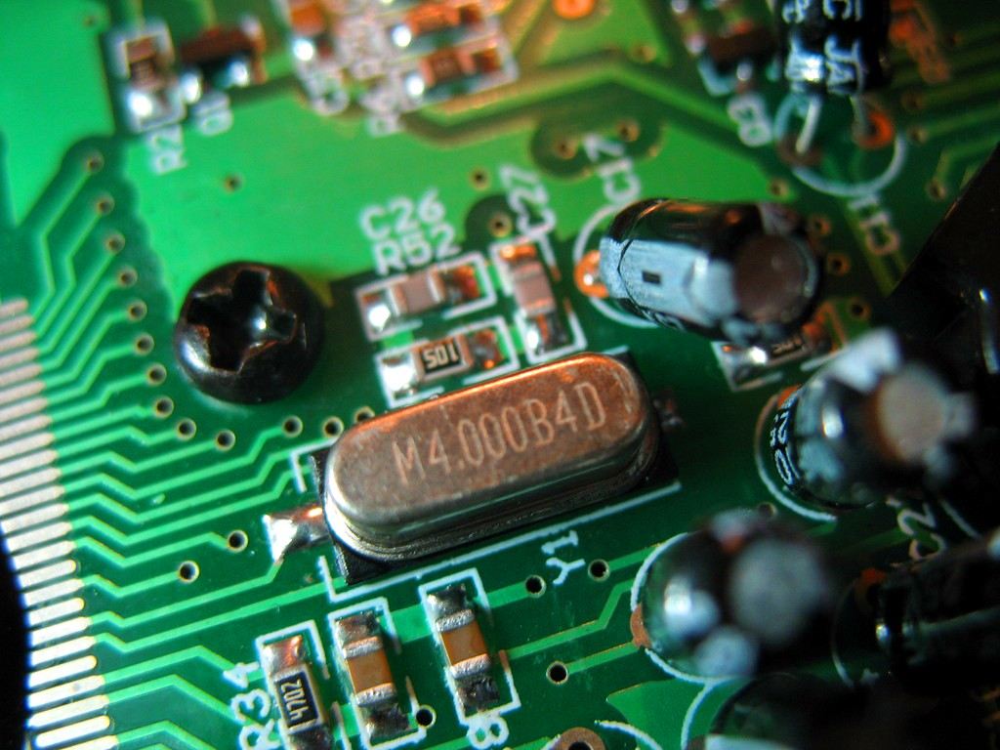
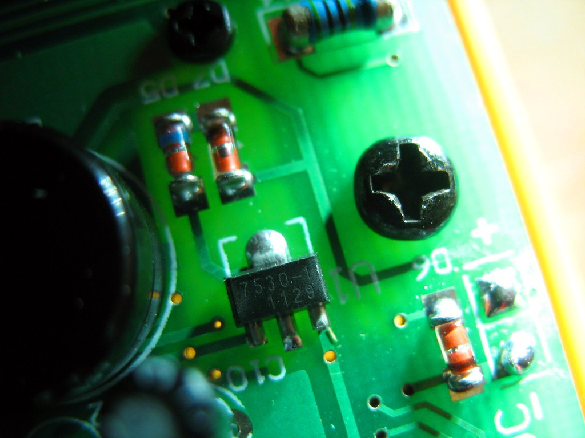
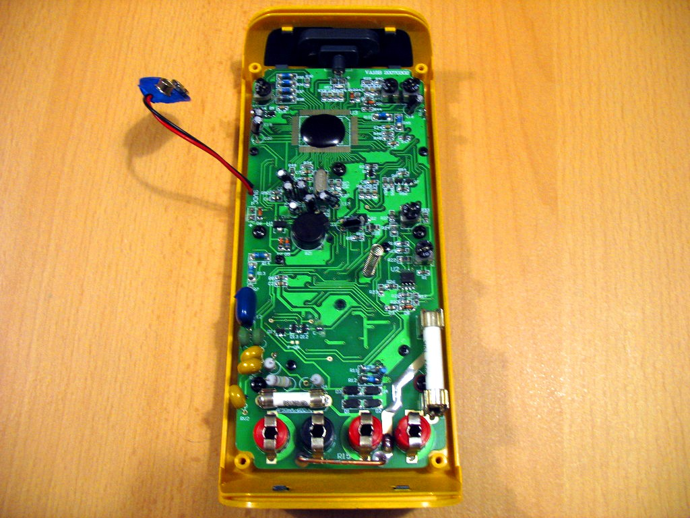
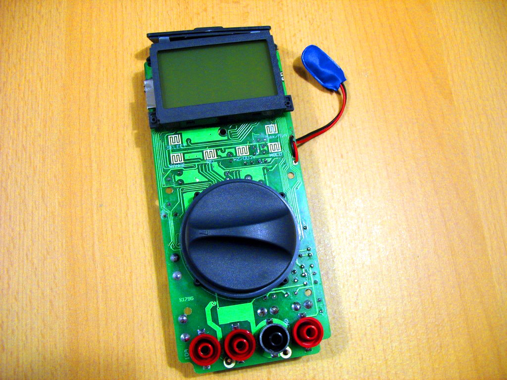
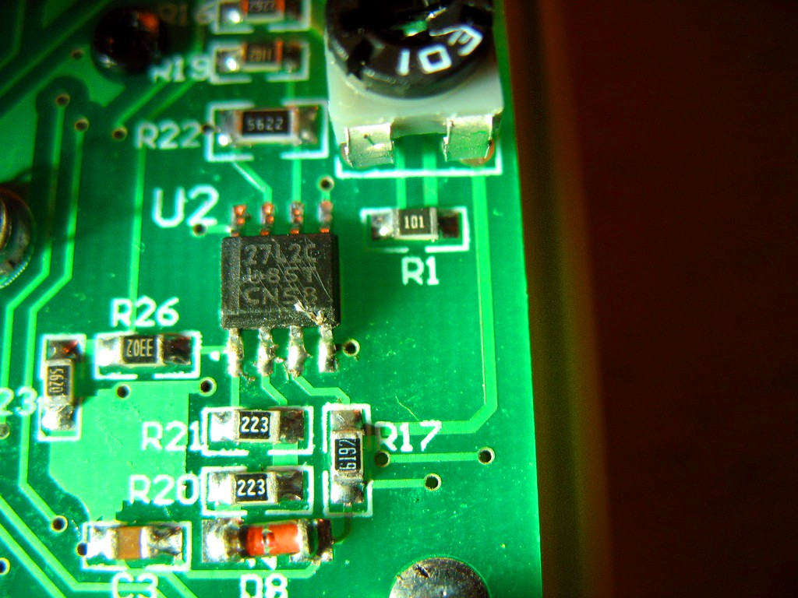
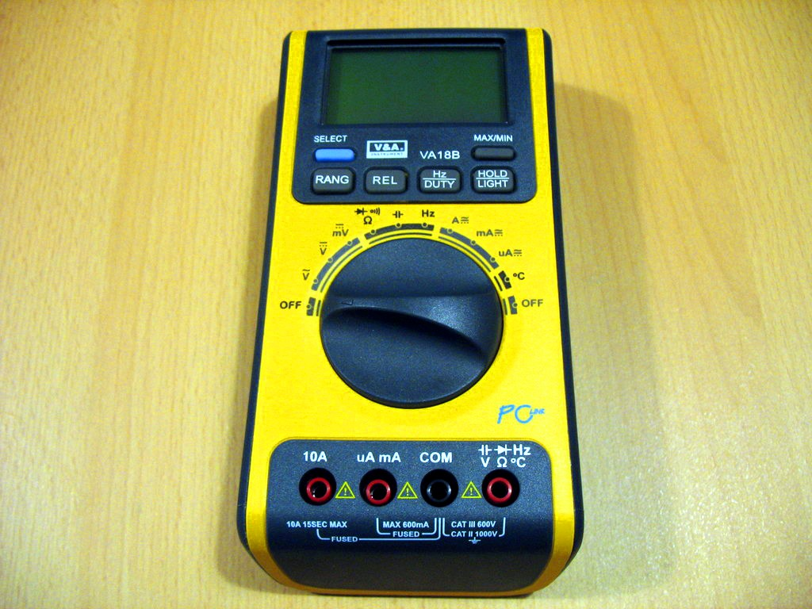
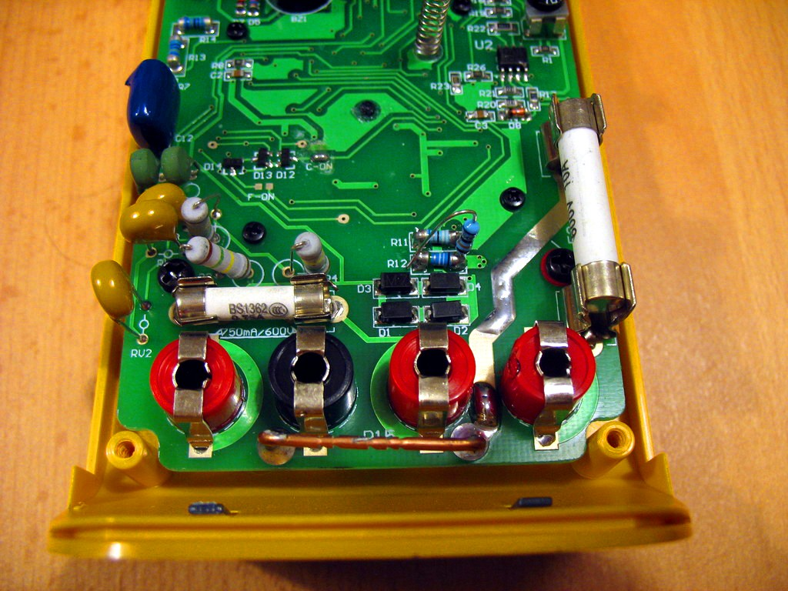
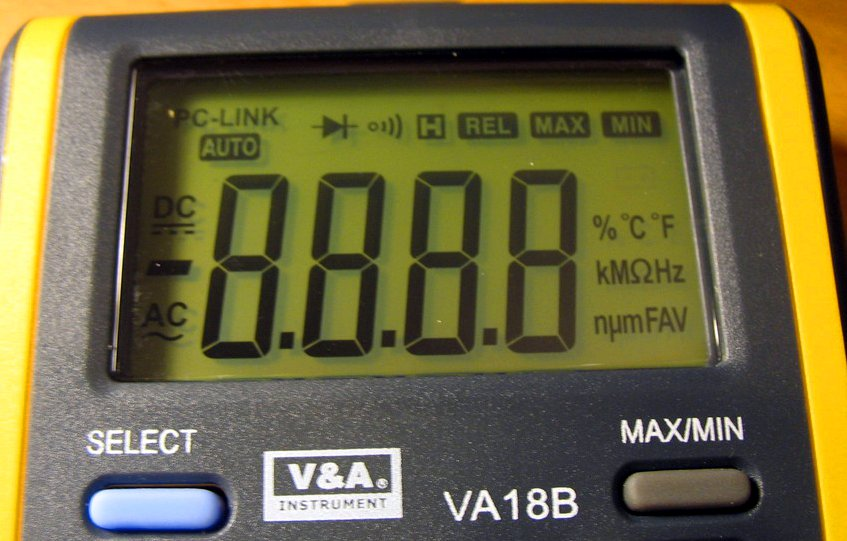

V&A VA18B¶

V&A VA18B¶
| Status | supported |
| Source code | serial-dmm |
| Counts | 6000 |
| IEC 61010-1 | CAT II (1000V) |
| Connectivity | USB/serial |
| Measurements | voltage, resistance, continuity, diode, capacitance, frequency, current, temperature, duty cycle |
| Features | min/max, data hold, relative, backlight |
| Website | mastech.com |
The V&A VA18B is a 6000 counts, CAT II (1000V) handheld digital multimeter with USB connectivity.
See V&A VA18B/Info for more details (such as lsusb -v output) about the device.
Note: The company V&A ("SHANGHAI YIHUA V&A INSTRUMENT CO., LTD, known as Mastech Shanghai") has apparently been part of (or related to) MASTECH in the past, and also sells some multimeter models that have been sold by MASTECH in the past.1
Model overview¶
It seems there have been at least two different revisions of the multimeter (or at least of the PC-Link cable). The older one used a Sunplus SPCP825 USB-to-serial chip (see here, here, or also check the drivers from here), the newer revisions use a Prolific PL2303HX chip. Both should work fine with sigrok, as long as the respective driver creates a "virtual COM port" / serial port device sigrok can connect to.
| Device | Rebranded? | PC interface chip | Vendor software | Comments |
|---|---|---|---|---|
| V&A VA18B (old) | no | Sunplus SPCP825 | "PC-LINK" | Manual: VA18B.pdf |
| V&A VA18B (new) | no | Prolific PL2303HX | "PC-LINK" | Manual: VA18B.pdf. PCB silk screen: "VA18B 20070302". |
| Amarad Hellas Electronic VA18B | yes (VA18B) | ? | ? | See also this photo. PCB silk screen: "VA18B 20070302". |
| Velleman DVM1200 | yes (VA18B) | ? | "PC-LINK" | — |
| Maxwell MX-25328 | yes (VA18B) | ? | "Maxwell Universal Program" | Maxwell wrote their own PC software, apparently (works fine with the VA18B if you select "25328" as device in the software). |
| PeakTech P3375 | likely (VA18B) | ? | ? | Very likely a rebranded V&A VA18B (1, 2, 3). |
Hardware¶
Multimeter:
- Main chip: Unknown, it's very likely a bare die under the black blob (see photos). The pads suggest it's a 100pin device.
- Display glass: "O LIT051476 LDH" (left), "090504 LDTP11781H" (right)
- Precision, very low power, CMOS dual opamp:: 27L2C U85T CN58
- 100 mA Low Power LDO (3.0V): Holtek HT7530-1
- Crystal: 4MHz
- Fuses: 750mA/600V (5x20mm), 10A/600V (6x30mm)
USB cable:
Photos¶
Mastech Va18b Package Contents
 Mastech Va18b Package Front
Mastech Va18b Package Front
 Mastech Va18b Pcb Front 1
Mastech Va18b Pcb Front 1
 Mastech Va18b Pcb Front 2
Mastech Va18b Pcb Front 2
 Mastech Va18b Package Back
Mastech Va18b Package Back
 Va Va18b
Va Va18b
 Mastech Va18b Crystal
{kind=link}
 Mastech Va18b Device Open
Mastech Va18b Device Open
 Mastech Va18b 7530 1
{kind=link}
 Mastech Va18b Pcb Back
{kind=link}
 Mastech Va18b Pcb Front
{kind=link}
 Mastech Va18b Device Open2
Mastech Va18b Device Open2
 Mastech Va18b 27l2c
{kind=link}
 Mastech Va18b Device Front
{kind=link}
 Mastech Va18b Device Back
Mastech Va18b Device Back
 Mastech Va18b Pcb Front 3
{kind=link}
 Mastech Va18b Lcd
{kind=link}
Protocol¶
14-byte LCD segments over USB-2-serial (Prolific PL2303HX chip, 2400 baud, 8n1), see various links below.
The DMM IC used in this multimeter is very likely a Fortune Semiconductor FS9721_LP3, see Multimeter_ICs#Fortune_Semiconductor_FS9721_LP3 for the protocol.
The transmission of the 14-byte chunks happens roughly every 300ms (measured using a logic analyzer at 24MHz samplerate, on the receiver IR diode on the USB cable and the RX pin of the PL2303HX). Sometimes it's 300.15ms, then 325.16ms, then 300.15ms, then 325.16ms again, and so on. This timing seems to be quite consistent.
However, only exactly 8 of these 14-byte chunks are spaced at 300ms. Every 9th chunk of 14 bytes will then be 600ms apart, for (yet) unknown reasons. This is not due to the IR transmission, the same effect can be verified when measuring the respective timing on the multimeter itself (before the data gets sent via IR).
To enable output to the PC on the multimeter you have to keep the Hz/DUTY key pressed while powering on the device. However, it will auto-poweroff after roughly 1 hour, even in this mode. To avoid that, press both the Hz/DUTY and the SELECT key during power-up (see manual, page 9, section 2.3.1).
Resources¶
- Protocol descriptions: [1], [2], [3]
- EEVblog forums: Product review: DMM latest V&A Mastech VA18B
- Other teardowns: 1, 2, 3 (VA18B, but the PCB silkscreen says "VA17B 20060413")